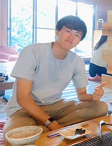
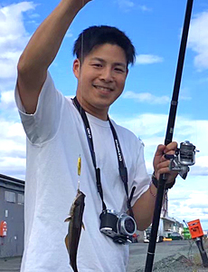
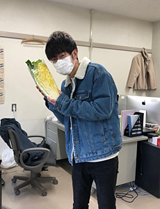
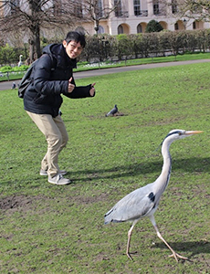
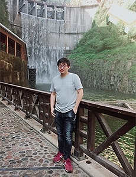

2021
Fellows in 2021. Publicly published information has been extracted into this local prototype.
Back to topFellows in 2021
public Q-PIT data
Performance study of a passive dehumidification system naturally controls the indoor hygrothermal environment using renewable energy.
2021Graduate School of Economics, Department of Economic Systems
The impact of compact cities on carbon emissions

Environmental sustainability assessment using high-resolution spatial information

The research on ventilation control of ship engine room considering ammonia fuel
2021Breakthrough of 900MPa barrier of fatigue crack growth resistance in BCC steels in high-pressure hydrogen environment

Experimental research of non-locality of turbulence in magnetized plasma.

CO2 mitigation through global supply chain restructuring
2021A carbon footprint analysis considering the production activities of the informal sector
2021Electrochemical CO2 Conversion to Value-added Chemicals
2021Addressing fuel starvation based degradation in polymer electrolyte fuel cells

Highly activated single-layer nanosheet dye-sensitized photocatalyst for overall water splitting
2021